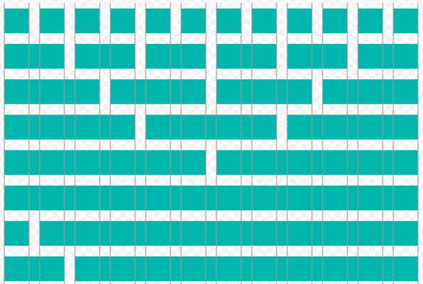

Frameworks
Frameworks er en kodeplatform med standardiserede elementer, der kan bruges til at opbygge og designe websites. De gør det lettere at udvikle et website, da det ikke er nødvendigt at starte forfra hver eneste gang, ved at tilbyde et væld af forskellige elementer, man kan bygge et website ud fra. Der findes frameworks til både front- og backend udvikling, og nogle at de mest kende er Bootstrap, Foundation og Boilerplate. Et framework består af HTML, CSS og JavaScript, og al CSS’en ligger så at sige i dvale, indtil det aktiveres i HTML-dokumentet.
Dog er der tale om enormt store filer, da de skal understørre mange forskellige behov. Det betyder at et website, der er lavet ved hjælp af eksempelvis Bootstrap, fylder meget mere end et website, der er kodet fra bunden. Desuden tager det lang tid at sætte sig ind i så store dokumenter.
Fordelene er altså, at det er hurtigt at lave et flot og brugervenligt, og det er let at integrere en masse funktioner. Ulemperne ved at bruge frameworks udtrykker sig ved, at det er svært at lave et helt unikt website, da der som nævnt er tale om standardiserede elementer, og så tager det lang tid at sætte sig ind i. Desuden lærer man et framework og ikke et kodesprog.
Lokal eller hosted?
Udvikleren kan placere det benyttede framework på en lokal eller en hosted server. Ved at placere frameworket på en lokal server, har udvikleren adgang til alle filerne, og websitet kan derved testes offline. Man skal derfor selv sørge for driftsstabilitet og hastighed.
Ved at hoste sit framework placeres det på en online server, skal man linke til de forskellige filer. Det betyder desværre, at hvis der er driftsproblemer på serveren, sætter det websitet ud af drift, og man kan ikke selv gøre noget. Det er desuden sværere at sikre, at koden bag websitet ikke er hacket.
Komprimeret kode eller ej
Når man skriver koden til et website, indeholder de forskellige dokumenter ofte et væld af mellemrum og linjeskift. Disse er ikke en nødvendighed for browseren, men de gør det lettere for udvikleren at orientere sig i de mange og store dokumenter. Ulempen er til gengæld, at de er med til at øge dokumenternes størrelse, og derfor kan de påvirke loadingtiden.
Ved at komprimere sin kode elimineres alt det, der for browseren er unødvendigt fyldstof. Det minimerer filernes størrelser, men ulempen er, at dokumenterne nærmest er umulige at læse for andre end udvikleren selv. De komprimerede filer skal derfor benyttes, hvis der ikke skal ændres noget. Skal der dog rettes i CSS-dokumentet, skal det eksisterende dokument kopieres, tilrettes og linkes til på ny.
Bootstrap
Bootstrap er et framwork, der er nyttigt i forbindelse med udviklingen af responsive websites, og det tilbyder mange muligheder for layouts og funktioner. Grundlaget for Bootstrap layouts er et grid med 12 kolonner, og på nuværende tidspunkt kan udvikleren benytte fire forskellige breakpoints;
- xs (extra small) til smartphones
- sm (small) til tablets
- md (medium) til desktops
- lg (large) til store desktops.
Breakpoints har en opadgående skalering, og helt konkret betyder det, at når indholdets størrelser er defineret til små mobile enheder, vil størrelserne også gøre sig gældende for tablets, desktops og store desktops. Dog skal udvikleren altid udnytte skærmpladsen bedst muligt.
Uanset enhedens størrelse vil der altid være 12 kolonner, men der kan indsættes det antal rækker, der er behov for. For at rækkerne skal fungere, kræver det dog, at de hver er indsat i en container. Rækkerne kan desuden indeholde alt det indhold, der er plads til, så længe det ikke overskrider bredden på 12 kolonner.
